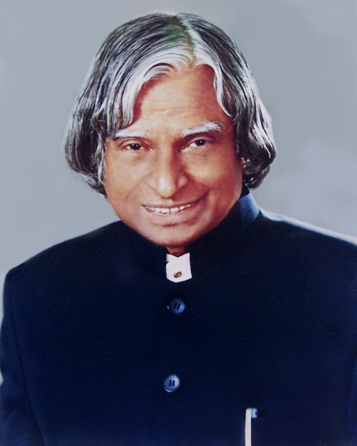
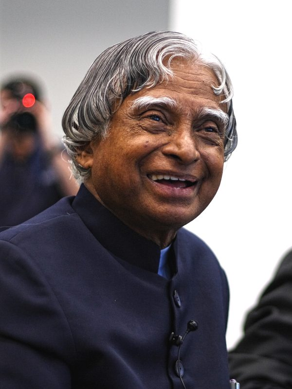
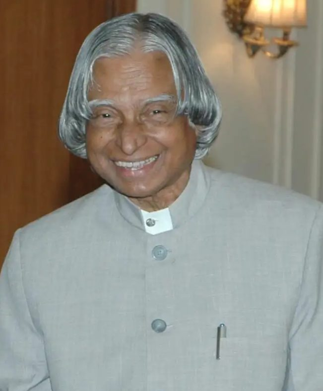
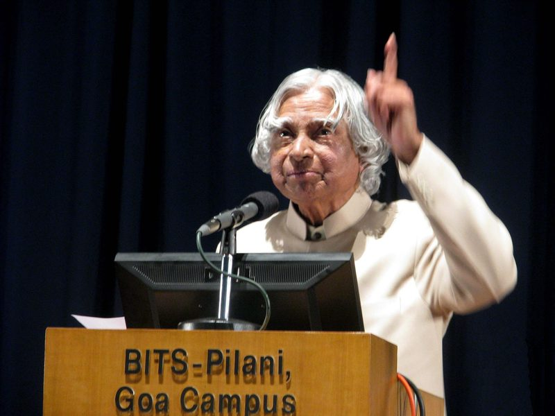
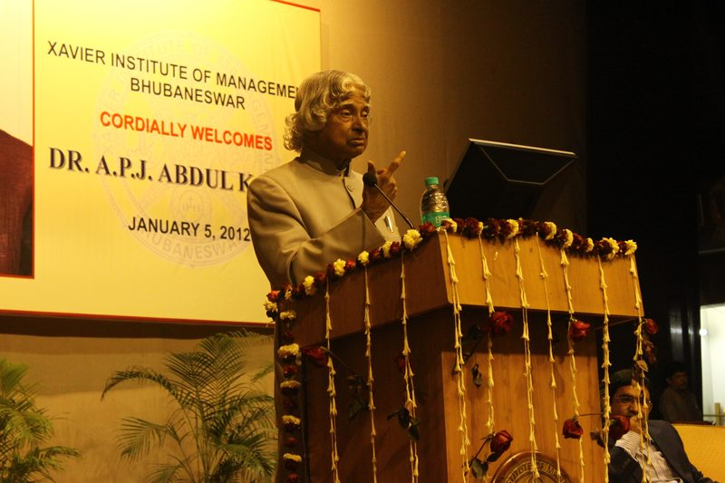

15 OCT 1931 — 27 JUL 2015
Dr. A.P.J.
Abdul Kalam
The Missile Man of India · The People’s President · A Teacher at Heart
Begin the journeyWho he was
Avul Pakir Jainulabdeen Abdul Kalam rose from selling newspapers on the streets of Rameswaram to directing India’s first satellite launch vehicle, steering its guided-missile programme, and ultimately serving as the nation’s 11th President. Yet he is remembered less for the titles he held than for the curiosity, humility, and warmth he carried into every classroom, laboratory, and living room he entered.
The long orbit
A Life in Full Flight
Born on 15 October 1931 in the temple town of Rameswaram, Tamil Nadu, Kalam grew up in a family of modest means — his father owned a small boat used to ferry pilgrims. To help support his family, a young Kalam distributed newspapers before school, an early lesson in discipline that stayed with him for life. He studied physics at St. Joseph’s College, Tiruchirappalli, before earning a degree in aerospace engineering from the Madras Institute of Technology in 1958, narrowly overcoming a setback in his early ambition to become a fighter pilot.
He joined the Aeronautical Development Establishment of DRDO, where he worked on early hovercraft designs, before moving to the Indian National Committee for Space Research — the forerunner of ISRO — in 1969. There he served as Project Director for the SLV‑III, India’s first indigenously built satellite launch vehicle, which successfully placed the Rohini satellite into orbit in 1980.
Returning to DRDO in the 1980s, Kalam led the Integrated Guided Missile Development Programme, giving India the Agni and Prithvi missiles and earning him the enduring title “Missile Man of India.” As Chief Scientific Adviser to the Prime Minister, he played a central role in the 1998 Pokhran-II nuclear tests. In 2002 he was elected the 11th President of India, an office he filled with such openness — answering children’s letters personally, keeping his door open to students — that the country began calling him the “People’s President.”
After his presidency, he returned happily to what he loved most: teaching. He lectured at universities across India, wrote extensively, and continued to answer every student who wrote to him. On 27 July 2015, he collapsed and passed away while delivering a lecture on livable planets at the Indian Institute of Management Shillong — still, to the very end, in front of a classroom.

Flight path
A Trajectory, Not a Straight Line
-
15 OCT 1931
Born in Rameswaram
Born to Jainulabdeen, a boat owner, and Ashiamma, in a modest household on Tamil Nadu’s coast.
-
1958
Graduates in Aerospace Engineering
Completes his degree at the Madras Institute of Technology, redirecting a childhood dream of flight into a career building it.
-
1969–1980
Project Director, SLV‑III
Leads India’s first indigenous Satellite Launch Vehicle at ISRO, successfully orbiting the Rohini satellite in 1980.
-
1980s–90s
Missile Man of India
Directs DRDO’s Integrated Guided Missile Development Programme, delivering the Agni and Prithvi missiles.
-
1997
Bharat Ratna
Receives India’s highest civilian honour for his contribution to science, technology, and national defence.
-
1998
Pokhran‑II
As Chief Scientific Adviser, plays a pivotal role in India’s second series of nuclear tests.
-
2002–2007
11th President of India
Serves a single term marked by openness and accessibility, earning the affectionate title “People’s President.”
-
2007–2015
Teacher, Author, Mentor
Returns to teaching and writing, publishing works including Wings of Fire and Ignited Minds, and mentoring students nationwide.
-
27 JUL 2015
A Final Lecture
Passes away at IIM Shillong while doing what he loved most — speaking to students, mid-lecture.
Major achievements
What He Built, What He Left Behind
Missile Man of India
Led the Integrated Guided Missile Development Programme, delivering the Agni and Prithvi missile systems that anchored India’s defence capability.
SLV‑III Project Director
Directed India’s first indigenous Satellite Launch Vehicle mission, successfully placing the Rohini satellite in orbit in 1980.
Pokhran‑II, 1998
Played a pivotal role as Chief Scientific Adviser during India’s second series of nuclear tests.
Bharat Ratna, 1997
Awarded India’s highest civilian honour in recognition of a lifetime devoted to science and the nation.
11th President of India
Served 2002–2007 with unmatched accessibility and warmth, remembered fondly as the “People’s President.”
Author & Teacher
Wrote Wings of Fire and Ignited Minds among other works, and spent his final years mentoring students across India.
Dream is not that which you see while sleeping,— Dr. A.P.J. Abdul Kalam
it is something that does not let you sleep.
Gallery
Moments Worth Keeping


